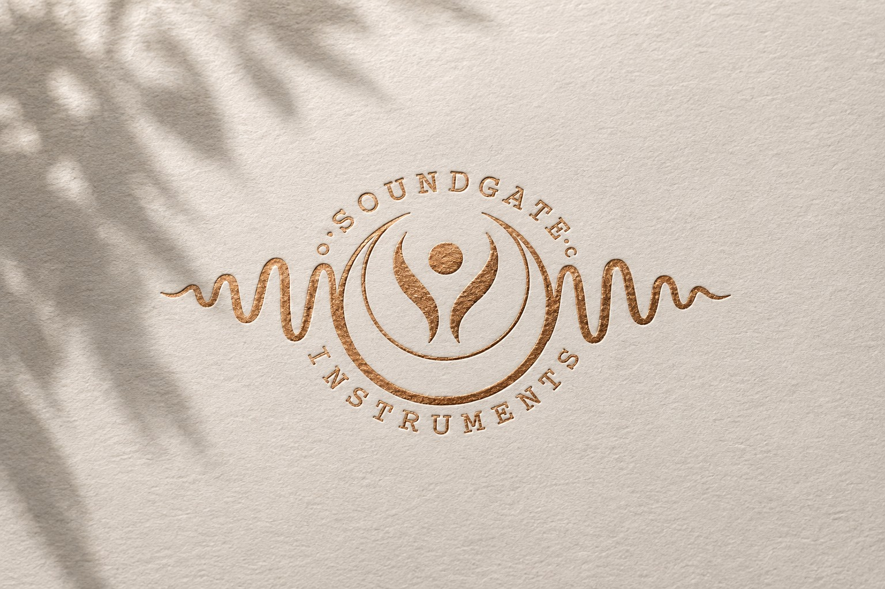
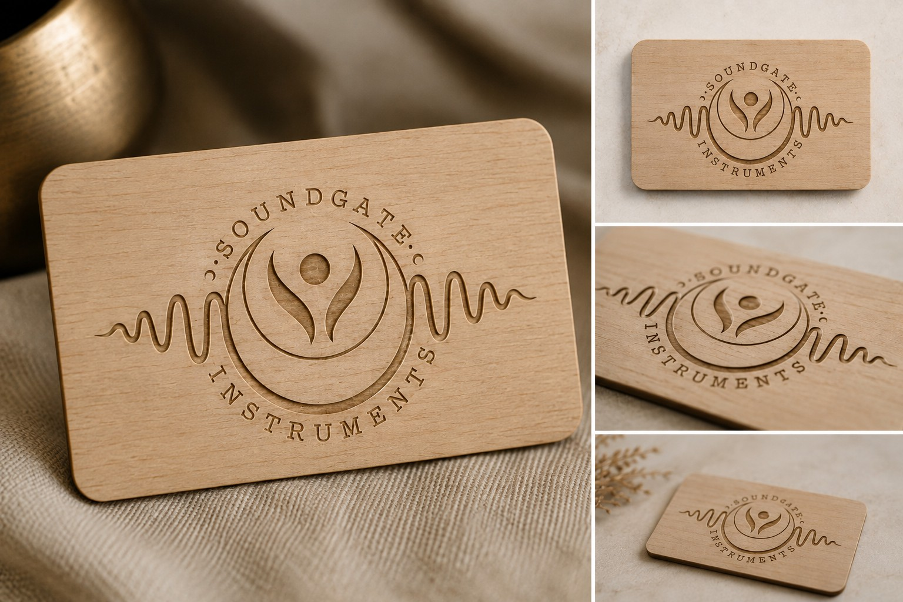
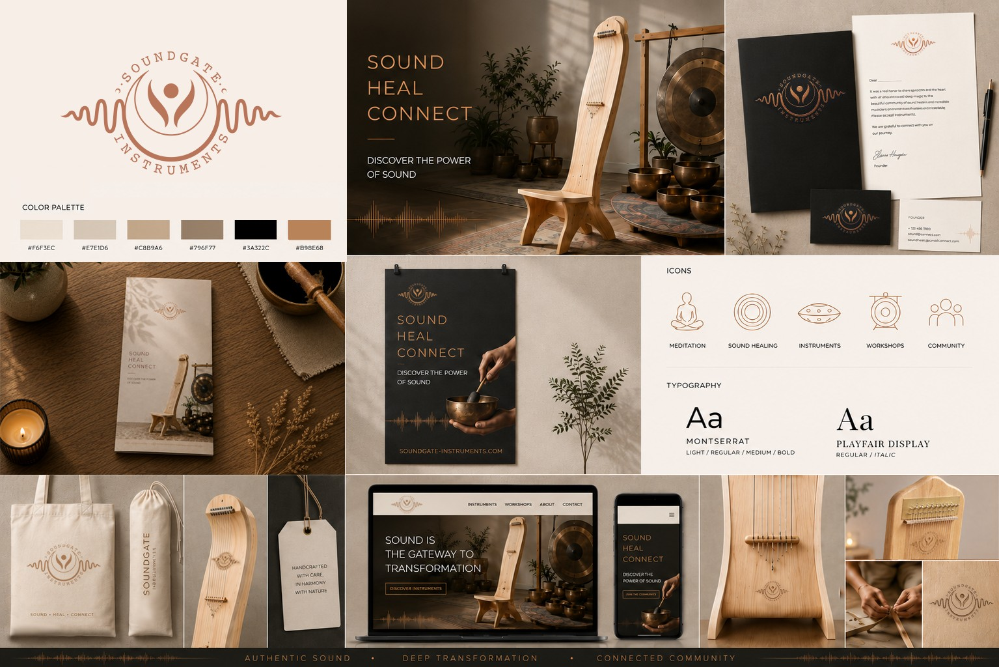
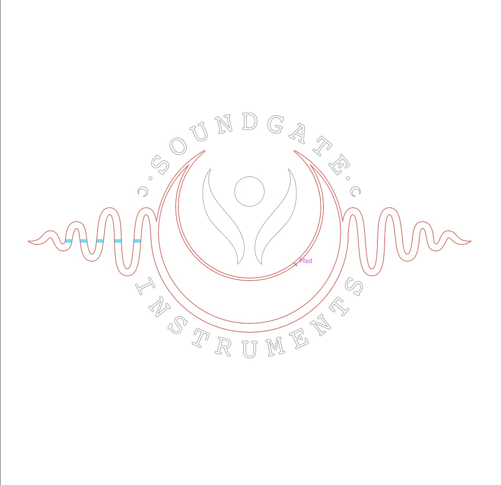
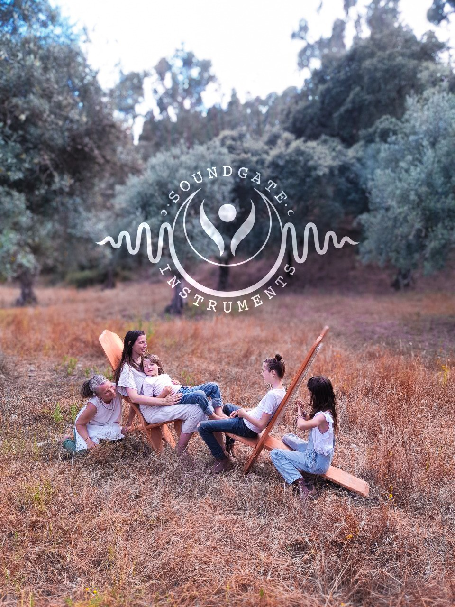

Brand Identity + Visual System + Art Direction
Soundgate Instruments handcrafts sound chairs, resonant, chair-shaped instruments carved from fine hardwoods in Germany and Portugal. Used for healing and deep relaxation by children, adults, and animals alike, the instruments work on a level deeper than simple relaxation. The studio already had its name, but no visual identity to go with it.
The brief required specific elements, a central figure flanked by two wing-like forms and a crescent moon, unified into one emblem that still ties back to the instrument itself. It also needed to feel beautiful and natural, yet unmistakably modern, never folkloric or purely spiritual.
The result is a hand-drawn sound wave resolving into a resting figure held within a crescent, drawn by hand, anchor point by anchor point, to match the craftsmanship of the instruments themselves.
A warm, neutral palette with a single copper accent, paired with Playfair Display and Montserrat, and a custom icon set, extends the same language across every touch point.
The identity carries through stationery, product tags, tote bags, a brochure, and the website, keeping the brand consistent from a business card to a workshop booking. A natural photoshoot in the Alentejo region of Portugal captured the sound chairs in real use, grounding the brand in the same warmth and stillness it was built to represent.




Lifestyle photography AI-generated for presentation purposes.
Logo and brand system designed by hand by NAEL.